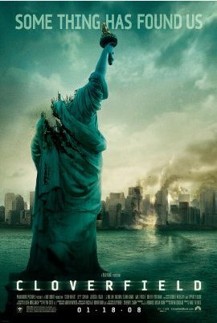

Cloverfield (2008)

Against my better judgement I couldn't help but snag a torrent of this. Sure enough, as the opening credits kicked in, my housemates assured us it was rubbish.
But then what happened is that I proceeded to love it. Clearly it polarises. The whole thing is shot in a shaky handicam held by one of the characters - imagine Blair Witch meets 9/11, only it isn't terrorists, it's a giant, evil whatthefuckisthat stalking the streets of NYC. It reminds me of Primer, in which the script is so realistic and lacking in over-ripe gravitas that, unusually, the actors don't even look like they are acting! What a concept. Well this is similar - albeit a lot dumber - but the strength is not in the script, which isn't especially strong, but is in the novel method of presentation.
There's clearly a limited number of movies that could be made like this, but for me, it was a welcome respite from the staged set-pieces of Hollywood's more conventional output. The sense of panic and confusion was beautifully heightened by the total lack of exposition - viewers only get to see what this small group of characters get to see, and even that is in blurry and imperfect fragmetary snatches. The monster, when it is even visible, is only glimpsed from afar. It was the closest a movie has ever come to creating the kind of tense, terrifying immersion that really great computer games can create.
I was amused to note that a bridge they take shelter under at the end looks exactly like the bridge they took shelter under at the end of The Day The Earth Stood Still (2008) - do all the bridges in Central Park look the same, or does this one have some special meaning? Anyhow, the final scene is saddening and telegraphed quite plainly from the opening shot (Camera retrieved at incident site US 447. Area formerly known as "Central Park") and it makes me weep with relief that a movie could so willing try and break the mold.
Rating:
0/10 if you're not into monster flicks, or if handycam footage makes you vomit.
10/10 If you fancy being scared silly by a giant alien monster.
Comments
Comments powered by Disqus